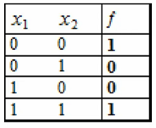

Логические элементы ЭВМ
Классификация Элементов и их сравнительные характеристики
Элементов ЦВМ называют функциональное устройство, выполняющее одну из задач реализации Булевых функций, запоминания информации, преобразования, формирования и усиления сигналов
Логические схемы предназначены для технической реализации основных и производных от них логических связей.
В ЭВМ операции выполняются двоичными символами. Существуют три способа представления символов:
- потенциальный
- импульсный
- Динамический
Потенциальный – представлен различными уровнями сигналов
Например 1- высокий уровень потенциала
0- низкий уровень потенциала
Возможна также использование системы низкого потенциала (СНП) где 1-задается более низким уровнем потенциала чем 0. А всистеме с высоким потенциалом (СВП) наоборот.
Импульсный способ
1- наличии положительного (+) импульса
0- наличии отрицательного (-) импульса
Применяется и способ когда 1 воспроизводится наличием импульса, а 0-его отсутствием
Динамический способ
1 - передается электрическими сигналами синусоидальной или пилообразной формой
0 - их отсутствием
Классификация элементов ЭВМ

Реализация данных в виде двоичных кодов в ЭВМ представлена логическими схемами которые оперируют «0» или «1» и выполненным по законам элементарных функций алгебры логики.
Во всех логических схемах входными напряжениями представляются аргументы логических функций, а выходными напряжениями выражается сама функция.
Логические схемы(переключательные схемы) определяются режимом работы транзисторов в режиме работы ключа(в режиме отсечки и насыщения , но не усиления).
Элементы реализующие одну Булевую функцию называют однофункциональными.
Функциональные элементы реализуют несколько Булевых функций.
Элементы обрабатывающие информационные и логические сигналы для воспроизведения их форм, амплитуды, длительности, получили название вспомогательных (усилители, преобразователи)
Схема логического отрицания «НЕ»
К элементарным функциям алгебры логики относят две константы, одну функцию одного аргумента и часть функций двух аргументов.
Одна функция F10(Х) одного аргумента.
Оставшаяся функция F (Х) принимает значения, инверсные по отношению к значениям аргумента Х, поэтому ее называют функцией инверсии или отрицания реализуется она схемой НЕ
Схема логического отрицания обычно используется в резистивном усилителе.
При подаче на схему высокого уровня потенциального напряжения на вход, на выходе устанавливается низкий уровень потенциального напряжения в связи с чем и происходит инвертирование.
Возможна инверсия не только аргумента, но и любой другой сколь угодно сложной функции. Возможна также сколь угодно многократная инверсия функций или аргументов.
Количество функций двух аргументов, относящихся к элементарным точно не установлено. Но считается, что их шесть.
1. Функция КОНЬЮНКЦИИ F20(Х0Х1), распространяется на любое количество аргументов и реализуется двухвходовой схемой «И»
В этой схеме Если на оба входа схемы подаются единичные сигналы то диоды запираются и ток источника проходит через R2 и на нем выделяется высокий потенциал выражающий единицу. Если оба диода открыты или хотя бы один открыт то по резистору протекает незначительный ток и возникает низкий уровень потенциала.
2. Функция ДИЗЪЮНКЦИИ F21(Х0Х1), распространяется на любое количество аргументов и реализуется двухвходовой схемой «ИЛИ»
В исходном состоянии V1 V2 –закрыты
В этой схеме 1 на выходе получается при наличии 1сигнала хотя бы на одном из входов
3. Функция СЛОЖЕНИЯ ПО МОДУЛЮ ДВА, называемая также функцией неравнозначности. F22 (0Х1), реализуемая двухвходовой схемой «ИЛИ ИСКЛЮЧИТЕЛЬНОЕ»
4. функция РАВНОЗНАЧНОСТИ F23 (0Х1)

5. Функция ШЕФФЕРА F23 (0Х1) , реализуемая двухвходовой схемой «И –НЕ»
6. Функция ВЕББА Fsup>23 (0Х1), реализуемая двухвходовой схемой «ИЛИ –НЕ»